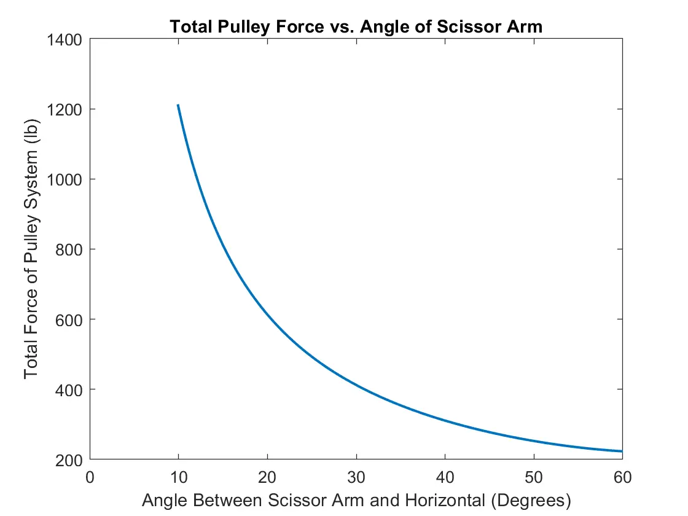
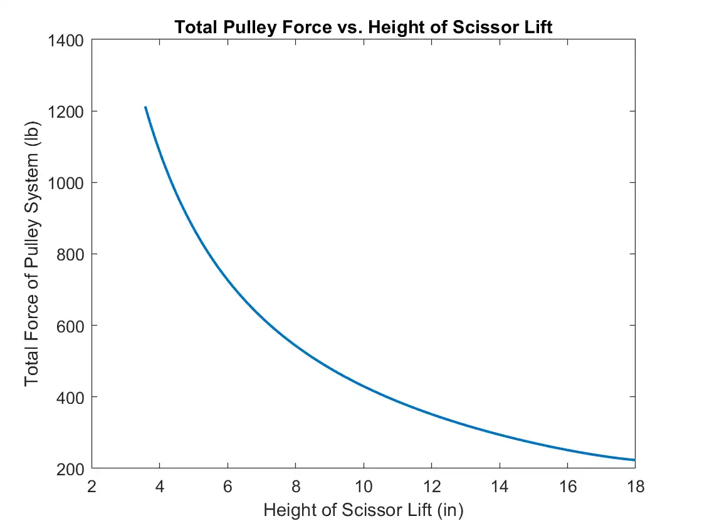
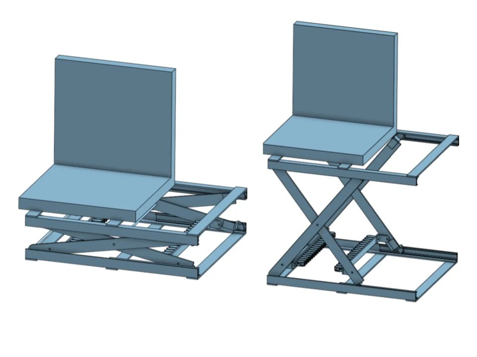
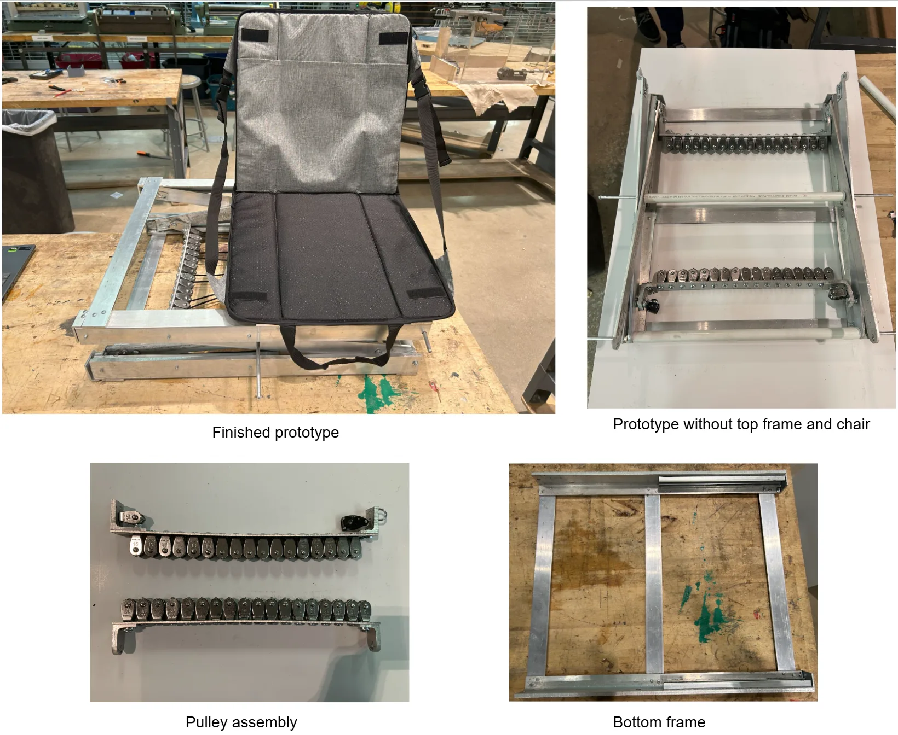

Pulley Paradox
Designed a portable, electronic-free lifting device to help a stroke survivor recover from falls.

Overview
For my second Design Thinking & Communications course, our team worked with Katy Morrison, Administrative Director for the Shirley Ryan AbilityLab, to develop a device that could help her father, Ed, recover from falls. Due to limited mobility from a stroke, Ed could not stand up from falls independently, while his primary caretaker, Kathy, could not lift him without assistance.
Design Process
We began with secondary user research and a client interview to better understand the problem and define device requirements. The main requirements were:
- Portability
- Floor accessibility
- Capable of lifting person
- Ease of operation
- No cords, batteries, or crank mechanisms
Additionally, we conducted market research on products designed to lift people or heavy things for design ideation. We created mockups of several concepts, including a fold-out ramp (Fig. 1), telescoping stairs (Fig. 2), and a pulley-driven scissor lift (Fig. 3). We selected the scissor lift because it offered compactness and high lifting capacity. Our initial mockup revealed uneven lifting caused by friction in our laser-cut pulleys, which we aimed to address with higher-quality pulleys in the final design.
I led MATLAB-based force analysis to model the required pulley force to lift the scissor lift throughout its range of motion (Fig. 4, 5). The results led us to design the scissor lift with a minimum height of about 4 inches to balance floor accessibility with lifting force, and use 36 pulleys in order to lessen the mechanical load to a level operable by Kathy. I then helped translate these design choices into CAD for fabrication (Fig. 6).



For our final prototype (Fig. 7), we fabricated the frame from aluminum using shop tools like the bandsaw, milling machine, drill press, and belt sander. We used steel pulleys and steel sliding door rail and wheel sets for a durable actuation system. A fold-out seat is also incorporated for comfort.
The final prototype revealed persisting friction and fabrication-tolerance issues, causing uneven lifting and instability during operation. For future iteration, we proposed using higher quality pulleys and tighter-tolerance manufacturing practices. The final design and findings were presented to our client through the prototype, technical report, and presentation.
